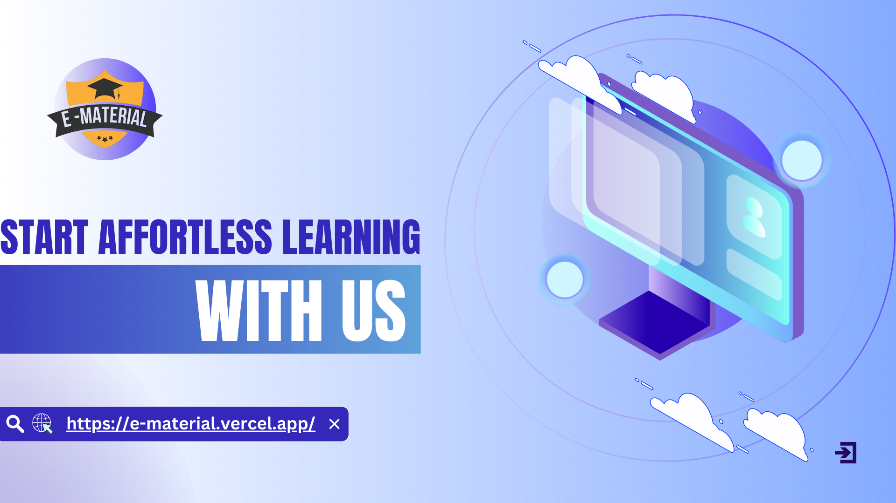

Effortless Learning with e-Material
16/9/2024
Introduction
In today's fast-paced, technology-driven world, students are constantly seeking efficient ways to access educational materials that can help them excel in their studies. Enter e-Material, a revolutionary online platform that simplifies learning by offering a wide range of academic resources for students across different disciplines. Whether you're preparing for exams or looking to enhance your knowledge, e-Material provides free, well-organized, and easily accessible study materials that meet the needs of learners at every level. In this blog, we'll dive deep into how e-Material is transforming the learning landscape and why it has become an essential tool for students and educators alike.
e-Material: Making Education Easier with Simple Access to Learning Resources
In today’s digital world, education is going through a big shift. Students and teachers alike now rely more on online platforms for their studies. One such platform that’s gaining popularity is e-Material, a website that brings academic resources right to your fingertips. Whether you’re looking for study guides, notes, or subject-specific materials, e-Material provides a vast collection to help students learn and grow.
This blog will dive into what e-Material offers, how it works, and why it’s making a difference in how students study and teachers teach.
What is e-Material?
e-Material is a website that provides a variety of educational materials for both students and teachers. If you’re studying for an exam or need extra help understanding a subject, this platform is the perfect resource. It’s designed to be simple and organized so that users can find the resources they need quickly.
One of the things that makes e-Material unique is how well it’s structured. Whether you’re searching for math notes or study guides in science, everything is neatly categorized by subject. This helps students save time and find exactly what they need without hassle.
Key Features of e-Material
What sets e-Material apart? There are several standout features that make this platform a valuable tool for students and educators alike.
- A Wide Range of Subjects:
- he platform covers many subjects—everything from science and math to history and technology. No matter your academic level or area of interest, there’s something for everyone. This variety makes it a great resource for students in high school, college, or even lower grades.
- Organized Content:
- The website is well-organized, with materials neatly arranged by subject. You don’t have to dig through random documents or websites to find what you need—everything is where it should be, saving you time and effort.
- Free and Accessible:
- Unlike some websites that charge you to access their materials, e-Material offers everything for free. This is especially helpful for students in underserved areas who may not have the resources to pay for study materials. It levels the playing field, making quality education accessible to everyone.
- Mobile-Friendly:
- One of the great things about e-Material is that it works just as well on your smartphone or tablet as it does on a laptop. So, whether you’re studying at home, on the bus, or waiting for a class to start, you can access your study materials anywhere.
- Collaboration with Teachers:
- e-Material doesn’t just help students; it also encourages teachers to get involved. Teachers can upload their notes and study guides to the platform, sharing them with their students. This makes learning more interactive and allows students to access additional materials outside the classroom.
- Regularly Updated:
- The platform ensures that its content is up-to-date. This is crucial in a world where information is constantly changing. By keeping the material fresh, students can be sure they’re learning the most current information relevant to their courses.
How e-Material Benefits Students
There are several reasons why e-Material is such a valuable tool for students:
- Time-Saving:
- Since the materials are well-organized, students don’t have to waste time searching for what they need. Instead, they can focus on studying and mastering the subject at hand.
- Better Learning Experience:
- With access to a wide variety of resources, students can dig deeper into topics that may have been hard to grasp in class. This helps them understand the material better, which ultimately leads to better grades and performance in exams.
- Improved Exam Prep:
- For students gearing up for exams, e-Material is a lifesaver. They can use the platform to review notes, solve problems, and prepare for their tests with confidence.
How e-Material Benefits Teachers
Teachers, too, can make great use of e-Material to improve the way they teach:
- Sharing Resources:
- Teachers can upload their notes and study materials to the platform, making it easier for students to access everything they need in one place. This is a great way to ensure that all students are prepared for class.
- Using Materials in Class:
- Teachers can use the resources available on e-Material to enhance their lessons. Whether for creating assignments, preparing quizzes, or encouraging class discussions, the platform provides a wealth of materials to choose from.
- Better Student Engagement:
- By using e-Material, teachers can encourage their students to be more engaged with the material, helping them better understand and retain what they’re learning.
The Future of e-Material
As technology continues to change, platforms like e-Material will continue to grow. In the future, it’s possible that e-Material could add even more interactive features like quizzes, flashcards, and video tutorials to make learning even more engaging. By continuously updating and improving its content, e-Material will stay ahead in offering students and educators the tools they need to succeed.
Conclusion
e-Material is a fantastic educational resource that makes learning easier for both students and teachers. With its user-friendly design, free access, and organized content, it’s transforming the way people study and teach. Whether you’re a student trying to ace your exams or a teacher looking for extra materials to help your students, e-Material has something for you.